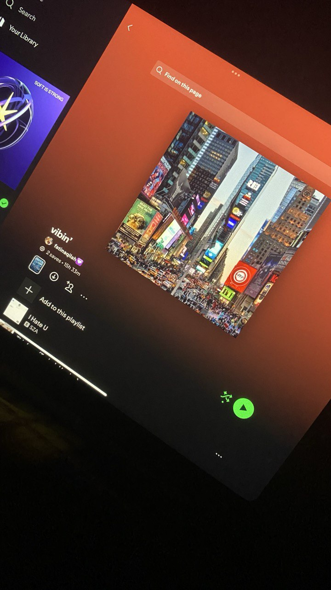
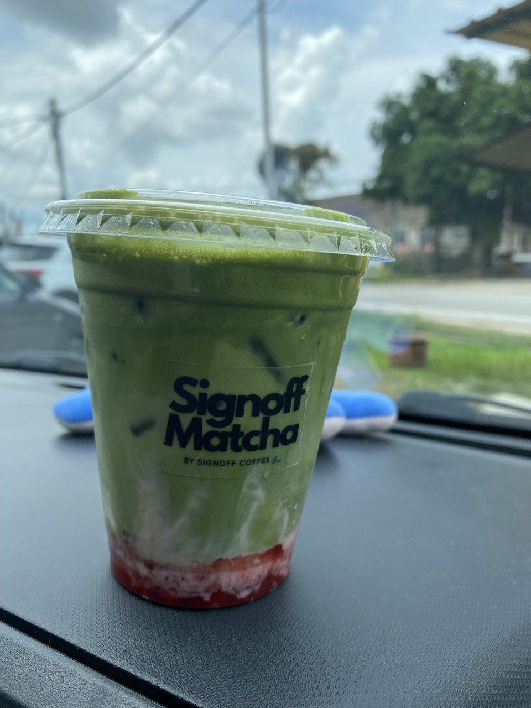
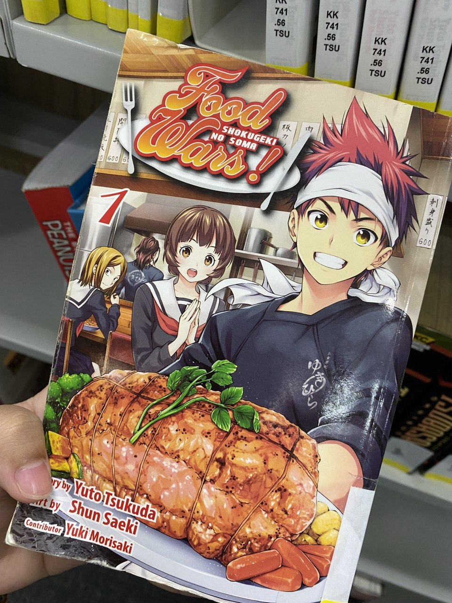
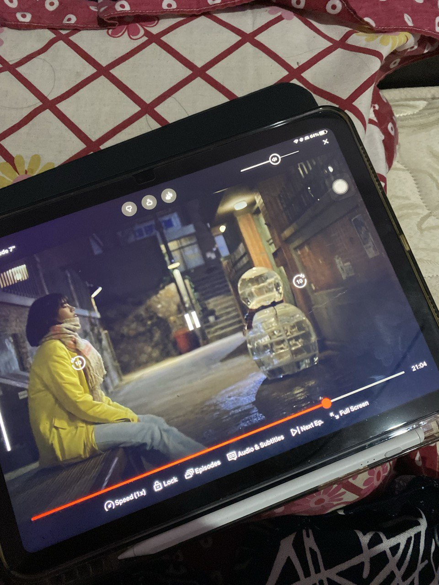
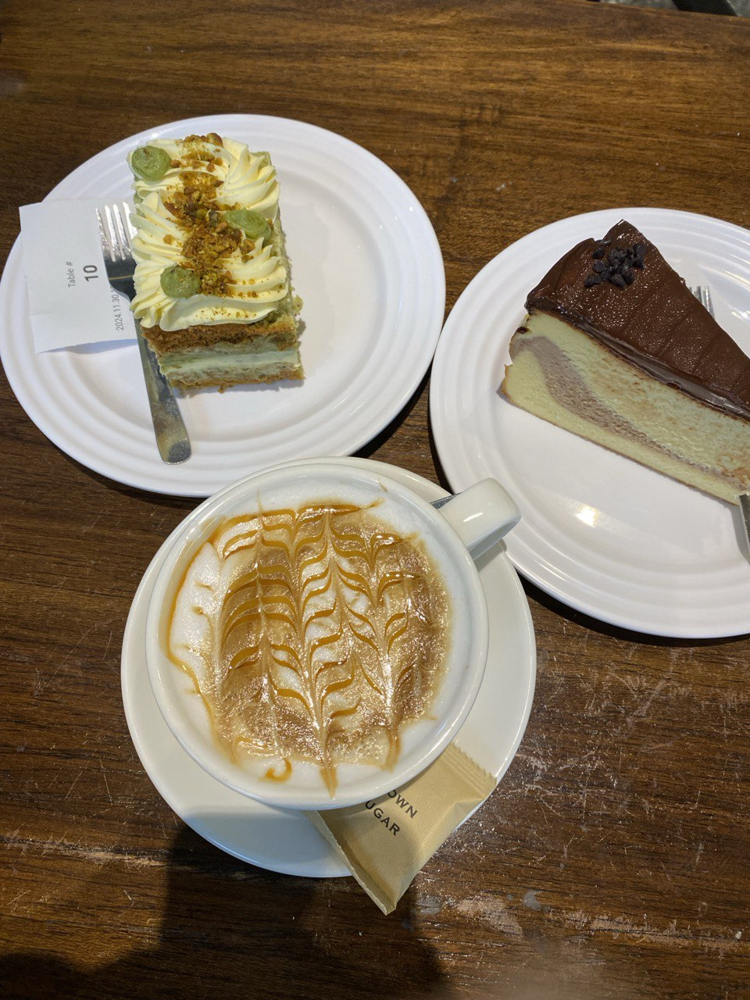

My Favourites 🌸
Here are some of my favourite things, places, and memories that make life special and meaningful to me. From colours to hobbies and little joys, these are the things I love most!

Pastel Blue
My go to playlist whenever i feel like hearing music.

Flowers
I love drinking matcha, especially strawberry matcha.

Cafés
Reading manga ggives me comfort everytime.

K-Dramas
I love relaxing with my favourite k-drama shows.

Pastries
Sweet treats are the best companions for tea time.